第一章 机器人与机械臂初识
📌 概述：本章面向零基础初学者完成对机器人与机械臂的初识。回答了“什么是机器人”、“机器人类别有哪些”和“为什么从机械臂入门”三个基本问题。解释了几组贯穿后续章节的机器人学术语，涵盖机械结构与几何（关节/连杆/末端、自由度/负载/工作空间、坐标系体系）、硬件（执行器与传感器）、学科方法（运动学/动力学/控制）。给出了推荐的机械臂开发工具与环境。
1 发展历史与分类方式
1.1 什么是机器人：从科幻到现实
"机器人（Robot）"一词最早出自 1920 年捷克作家卡雷尔·恰佩克的剧本《罗素姆的万能机器人》，词根源自 robota（意为"劳役、苦工"）。但真正让机器人从科幻走向现实，是工业机器人的诞生：
- 1954 年，美国人乔治·戴沃尔申请了第一台可编程机械手专利，奠定了"用程序代替人手"的工业机器人思路。
- 1961 年，Unimate 机械臂在美国通用汽车的装配线上岗，成为世界上第一台真正投入生产的工业机器人，负责压铸件搬运。
此后，机器人技术沿两个方向演进：一个方向追求工业精度与负载（焊接、喷涂、装配等制造场景）；另一个方向追求自主性与适应性（移动、感知、决策等非结构化场景）。今天我们见到的各类机器人，本质上都来自这两个方向的延伸与融合。
如何判断"是不是机器人"
会动 ≠ 机器，一个被广泛接受的判断标准是：机器人是一种能够通过感知、决策、执行，自主或半自主地完成物理任务的机器。必须同时具备可编程（动作可改）、可运动（产生物理位移或操作）、有感知（获取环境/自身反馈）三项特征。即：会按程序"感知—决策—执行"进行运动的才是机器人，"按固定流程动作"的叫自动化机器。
| 设备类别 | 是不是机器人 | 关键判断 |
|---|---|---|
| 机械臂 | ✅ | 可编程、能运动、有位置反馈，三者齐全 |
| 家用扫地机器人 | ✅ | 可编程、能移动、有传感器（防跌落、寻路） |
| 自动取款机（ATM） | ❌ | 动作固定、不可编程改变运动逻辑，属于自动化设备 |
| 普通洗衣机 | ❌ | 只有定时循环，无环境感知、无运动机构 |
1.2 机器人的分类方式
机器人种类繁多，没有唯一正确的分类法。常见的三个分类视角为：看它干什么（应用领域）、看它怎么走（运动方式）、看它长什么样（构型与仿生）。
💡 掌握这些分类，不是为了背概念，更是为了在遇到机器人时能快速做出判断。比如看到一台轮式机器人，就能联想到它能够"建图、定位、导航"，优势是"简单可靠、成本低"，常见于地面清洁、物流配送等场景；反过来，要设计一台野外巡检机器人，则会优先考虑履带式或足腿式——越障能力才是关键。分类本质上是一张"机器人速查表"。
1.2.1 按应用领域分
按机器人服务的行业和场景划分，是最贴近"用途"的分类视角。参照国际机器人联合会（IFR）的口径，可分为工业、农业、服务（个人家用 + 专业服务）、特种四大类。
| 类别 | 主要特点 | 优点 | 缺点 | 实例 |
|---|---|---|---|---|
| 工业机器人 | 面向制造业，结构化环境、重复精度高 | 速度快、精度高、可 24 小时作业 | 环境适应性差，需安全防护 | |
| 农业机器人 | 面向农田/温室，半结构化、户外作业 | 缓解劳动力短缺，作业标准化 | 受天气与作物多样性影响大 | 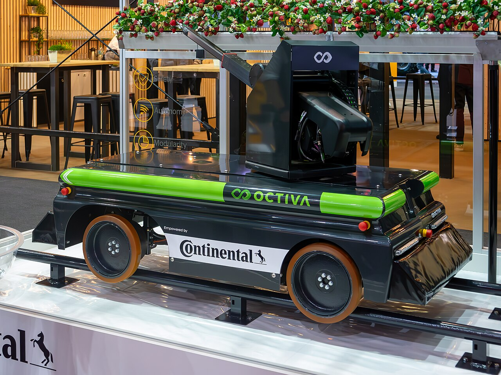 |
| 服务机器人 | 直接服务于人，强调安全与交互 | 与人共事，应用场景广 | 安全与合规要求高 | 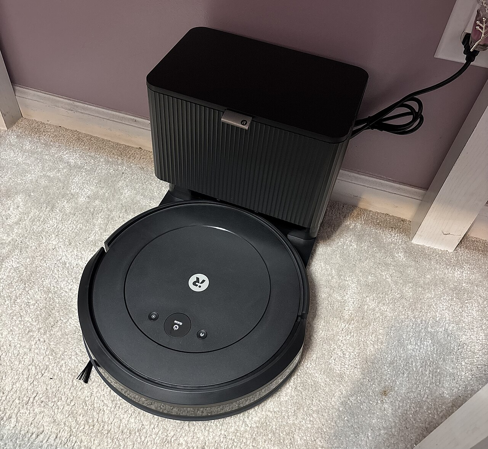 |
| 特种机器人 | 替人进入危险/极端环境作业 | 替代人做高危工作 | 成本高、定制化程度高 | 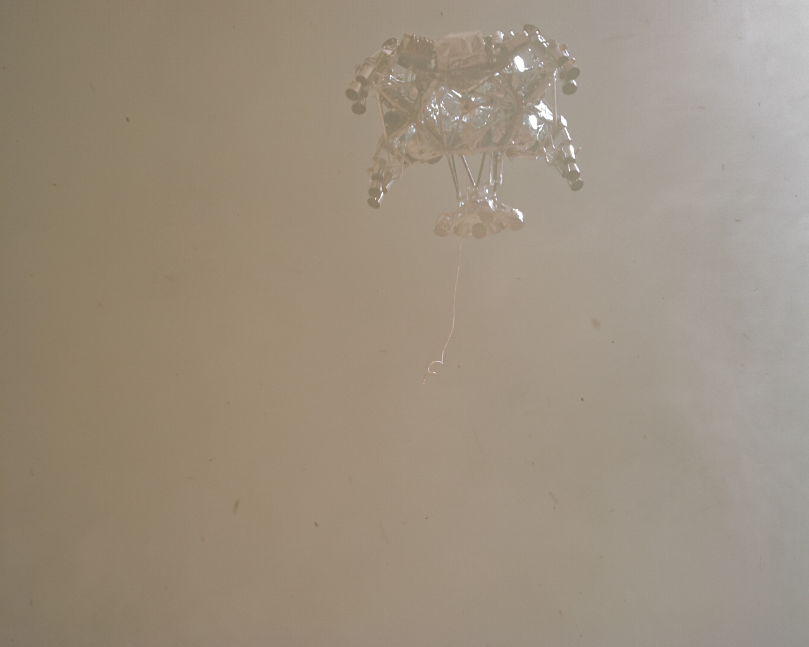 |
💡 其中"服务机器人"按服务对象又细分为个人/家用（如扫地机、陪伴机器人）和专业服务（如手术机器人、物流配送）。本教程后续涉及的 JoyArm 机械臂既可用于个人/家用，亦可用于专业服务。
1.2.2 按移动方式分
按机器人的基座是否移动、以及怎么移动来划分。这一视角直接体现了机器人"在不在原地干活"以及"怎么去到目标位置"。
| 类别 | 主要特点 | 优点 | 缺点 | 实例 |
|---|---|---|---|---|
| 固定式 | 基座固定不动，只有臂在动 | 精度高、负载大、易控制 | 工作范围受限 | |
| 轮式 | 靠轮子在地面上行驶 | 速度快、效率高、结构简单 | 仅适于平整地面，越障差 | 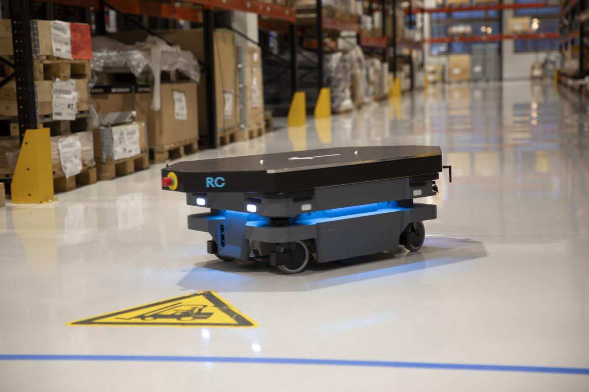 |
| 履带式 | 靠履带行驶，附着力强 | 越野与越障能力强、接地面积大 | 速度慢、能耗高、易损地面 | 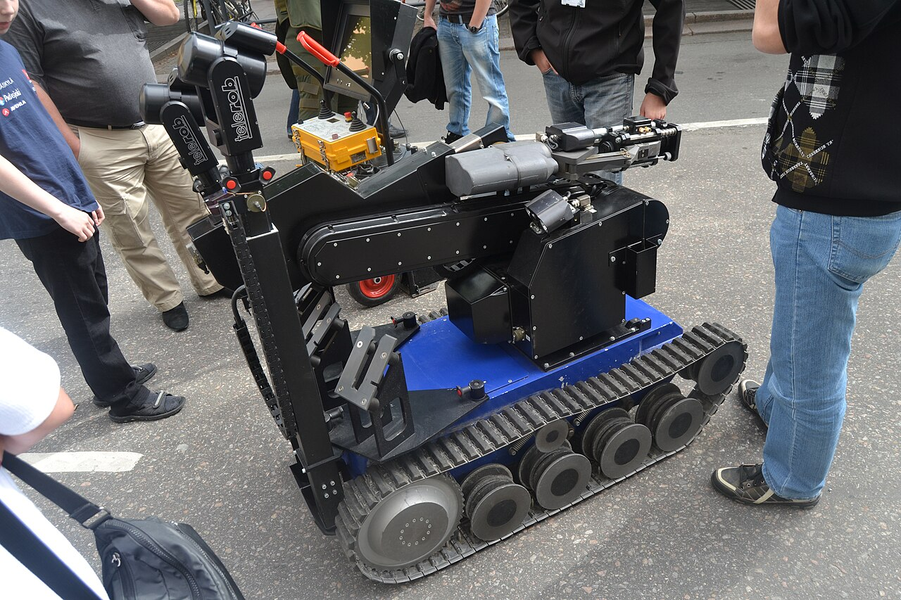 |
| 足腿式 | 仿生多腿行走（双足/四足/多足） | 越障与地形适应性最好 | 控制复杂、能耗高、负载有限 | 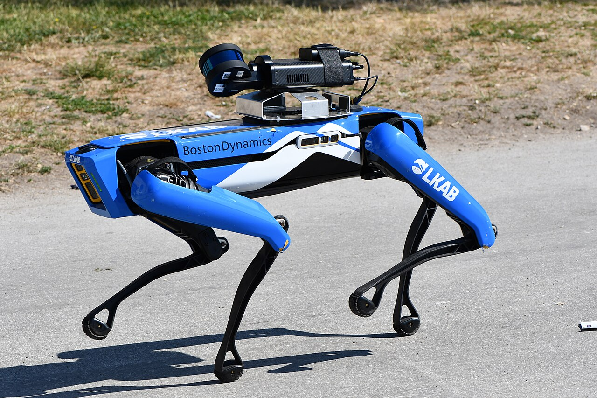 |
| 复合式 | 轮、腿、履等两种以上方式组合 | 兼顾速度与越障，适应面广 | 机械与控制复杂度高 | 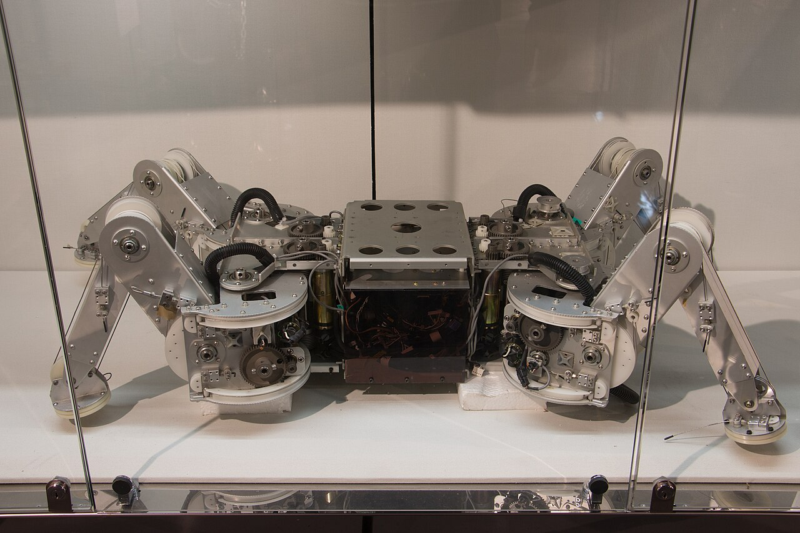 |
| 飞行式 | 借助旋翼/固定翼在空中飞行 | 三维机动、覆盖范围大、无视地形 | 续航与负载受限、受气象影响 | |
| 水下式 | 在水下作业，耐压密封（含螺旋桨推进与仿生鱼摆尾） | 可到达人难以涉足的深海 | 通信与定位困难、维护成本高 | 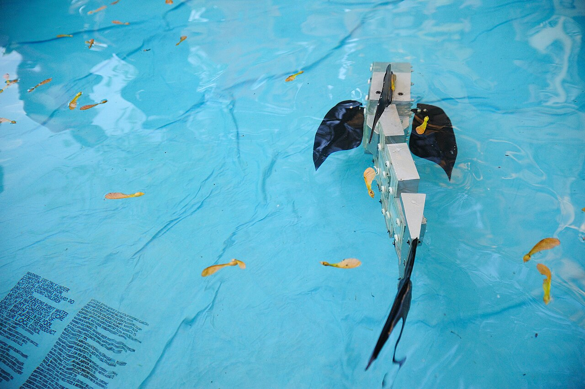 |
| 空间式 | 在太空/外星环境运行 | 承担行星探测等极端任务 | 研制成本极高、不可维修 | |
| 其他移动方式（爬行/攀爬/蠕动/跳跃/扑翼/滚动等） | 上述之外的小众移动方式：贴地爬行、立面攀爬、身体蠕动、弹跳、扑翼飞行、整体滚动等 | 各自适配特殊场景（管道/废墟/碎片地形/空中等） | 通用性差、载荷续航受限，多为定制 | 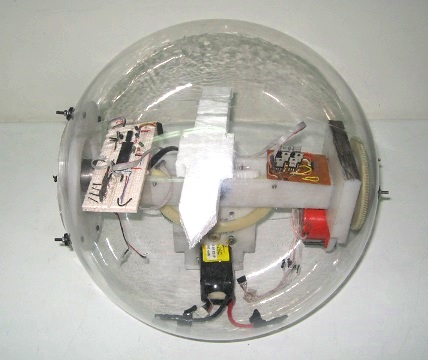 |
1.2.3 按构型与仿生特点分
按机械结构的拓扑（关节如何串联/并联/混联）以及是否模仿生物形态来划分。这一视角最贴近"机器人本体长什么样"。
| 类别 | 主要特点 | 优点 | 缺点 | 实例 |
|---|---|---|---|---|
| 串联机器人 | 多个关节首尾依次串联，像人的手臂；常见变体有直角坐标、圆柱坐标、SCARA（平面关节）等 | 工作空间大、灵活、结构简单 | 累积误差大、刚度较低 | |
| 并联机器人 | 多条支链共同驱动末端平台；代表有 Delta（高速拾放）和 Stewart 平台（六自由度） | 刚度高、速度快、无累积误差 | 工作空间小、控制复杂 | 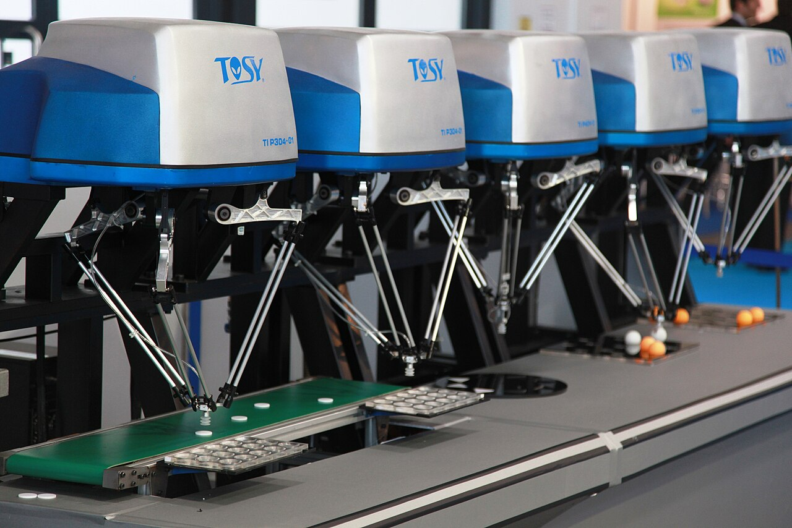 |
| 混联机器人 | 串联与并联机构组合，取两者之长（如 Tricept、Exechon，并联主结构 + 串联腕） | 兼顾大工作空间与高刚度 | 结构与建模复杂 | 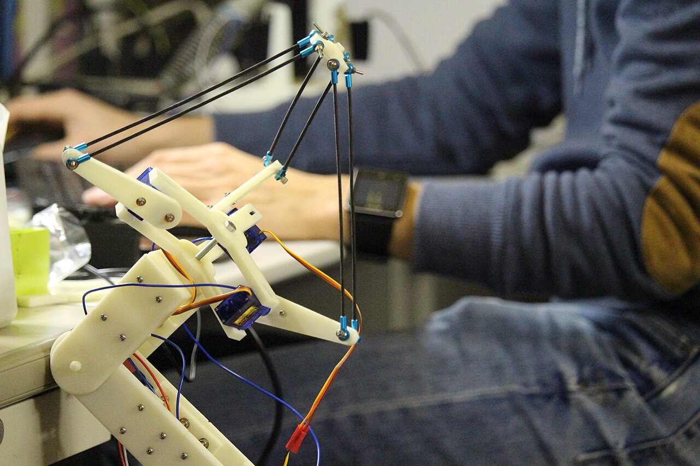 |
| 人形机器人 | 仿人形，双足 + 双臂 + 头部 | 适配人类环境与工具 | 平衡与控制极难、成本高 | |
| 四足机器人 | 仿四足动物，四条腿行走 | 比双足稳、比轮式更能越障 | 负载与续航仍受限 | |
| 其他仿生 | 仿鸟类（扑翼）、鱼类（摆尾）、昆虫节肢动物（六足/八足）、爬行（蛇形）、植物等众多仿生形态 | 各自适配特殊场景（空中/水下/狭窄空间/侦察等） | 通用性差、多为定制 |
📌 一台机器人往往同时属于多个类别：例如一台带轮子、会送货、与人交互的酒店派送机器人，既属于"服务机器人"又属于"移动机器人"。
1.3 为什么从机械臂开始入门
机械臂（Robotic Arm / Manipulator）几乎是贯穿各类别的"最大公约数"：它既是工业机器人的代表，又是固定式机器人的典型，还是串联构型的基础形态。它是最经典、也最适合作为入门的一类机器人：
- 应用最广，值得学：从工厂的焊接、装配、喷涂，到医院里的手术辅助（如达芬奇手术机器人），再到生活中的分拣、抓取，机械臂几乎无处不在。这意味着学完就能直接对接真实场景，立刻解决实际问题。
- 理论最完整，好上手：机械臂涉及的运动学、动力学、轨迹规划、运动控制，正是整个机器人学的核心骨架，体系最成熟、教材最丰富，初学者能沿着一条清晰的主线稳步推进。
- 其他机器人前置基础，能进阶：人形机器人的手臂、四足机器人的腿部，本质都是"安装在可移动基座上的机械臂"。先掌握固定机械臂，再扩展到移动与人形，是最自然的进阶路径。
🎯 本教程以JoyArm 机械臂作为实机对象展开机械臂的入门学习 —— 既能立刻做有用的事，又能打通机器人学理论主干，还能为后续学习人形、四足等更复杂形态打好基础。
2 基础概念速扫盲
机器人学有大量专有术语，初学者易理解不清而被劝退。本节按类别对每个术语进行 “直观解释+作用说明”，在开启正式学习前先建立一个直观认识。
💡 不必立刻背下来。通读一遍留个直观印象，后续回查即可。
2.1 机械结构与几何类
描述机械臂"长什么样、能怎么动"，是后续所有章节的物理基础。
2.2.1 基本组成：基座、关节、连杆、末端执行器
把一台机械臂的"外衣"剥掉，剩下的是一条由基座 → 关节 → 连杆 → 关节 → … → 末端执行器串起来的运动链。下图为 JoyArm 的组件构成：
| 中文 | 英文 | 直观解释 | 功能作用 |
|---|---|---|---|
| 机械臂 | Robotic Arm / Manipulator | 由关节和连杆串联而成的可编程运动链 | 在工作空间内把末端执行器送到指定位置与姿态 |
| 基座 | Base | 机械臂的"根"，固定在地基或移动平台上 | 承载全部重量、定义机械臂的位置，是基座坐标系的起点 |
| 关节 | Joint | 连接两根连杆、能转动的"铰链"（旋转关节 R 或移动关节 P） | 提供自由度，决定机械臂能往哪些方向运动 |
| 连杆 | Link | 连接相邻关节的刚性杆件，类似人的骨头 | 把关节的运动传递、放大到末端，决定机械臂的臂展 |
| 末端执行器 | End-Effector | 装在机械臂最前端、直接干活的工具（夹爪、吸盘、焊枪等） | 与外界发生物理交互，完成抓取、装配、喷涂等任务 |
💡 口诀：关节负责"动"，连杆负责"传"，末端负责"干"，基座负责"站"。
一台机械臂的"关节—连杆"重复了几段，往往决定它有几个自由度。
2.2.2 关键参数：自由度、负载、工作半径、工作空间
认识完"长什么样"，还要看一组描述机械臂"能干什么、能伸多远"的关键参数。它们是机械臂选型与性能评估的基本指标：
| 中文 | 英文 | 直观解释 | 功能作用 |
|---|---|---|---|
| 自由度 | Degree of Freedom（DOF） | 机械臂独立运动方式的个数，等于能自由控制的"变量数"；通常一个关节贡献 1 个自由度 | 决定末端能以多少种方式调整位置与姿态，是机械臂灵活性的核心指标 |
| 负载 | Payload | 机械臂末端最多能稳稳举起多重的物体，常用单位 kg | 决定能搬多重的工件，选型或设计时必须大于实际工件 + 末端执行器重量 |
| 工作半径 | Reach | 机械臂从基座到末端的最大伸展距离，常用单位 mm | 决定机械臂"一伸手能多远"，是臂展尺寸的直接体现 |
| 工作空间 | Workspace | 机械臂末端能到达的所有位置构成的体积范围 | 决定能作业的区域大小；目标点必须落在工作空间内才能被执行 |
💡 三者的关系：自由度回答"灵活不灵活"，负载回答"举得动多重"，工作半径 / 工作空间回答"够得到吗"。三者要同时满足 —— 再灵活的手臂，够不到、举不动也白搭。
2.2.3 坐标系体系
要让机械臂精确地把末端送到某点，必须先有一套"统一语言"来描述位置和姿态，这就是参考坐标系体系。机械臂常用到以下坐标系：
| 中文 | 英文 | 直观解释 | 功能作用 |
|---|---|---|---|
| 基座系 | Base Frame | 固结在基座上的坐标系，是整条机械臂的"原点" | 作为机械臂运动的统一参考基准，运动学、动力学求解通常都在此系下进行 |
| 连杆系 | Link Frame | 固结在每根连杆上的坐标系，每个关节处都有一个 | 描述相邻连杆之间的相对位置与姿态，是运动学建模的基本工具 |
| 腕部系 | Wrist Frame | 固结在手腕处（末端三个关节）的坐标系 | 分离"位置由手臂决定、姿态由手腕决定"，简化逆运动学求解 |
| 末端系 / 工具系 | End / Tool Frame | 固结在末端执行器（如夹爪指尖）上的坐标系 | 描述工具本身的位置与朝向，操作员最关心此系下的目标 |
| 固定系 / 工作台系 | World / Station Frame | 固结在工作台或车间的全局坐标系 | 当有多台机械臂或外部设备协作时，提供统一的世界坐标 |
| 目标系 / 物体系 | Object Frame | 固结在工件或目标物体上的坐标系 | 描述"工件在哪里、朝哪放"，夹爪执行器系与其重合时才能抓到物体 |
📌 为什么这么多坐标系？ 因为不同人关心不同事：运动控制关心基座系和执行器系，操作员关心工具系，视觉感知关心工作台系。第二章位置正运动学的原理便是多个坐标系间的位姿关系求解。
2.2 感知执行硬件类
描述机械臂"用什么器件动起来、用什么器件感知世界"。表格为机械臂（轻小型桌面级）通常会用到的硬件，下图中为 JoyArm 用到的硬件：
| 中文 | 英文 | 直观解释 | 功能作用 | 实物图 |
|---|---|---|---|---|
| 电源 | Power Supply | 给整套系统供电的"心脏"，把市电或电池转换为所需电压 | 为电机、控制器、传感器提供稳定能量，决定系统能否长时间运行 | - |
| 电机 | Motor | 把电能转换为机械转动的"肌肉"，是关节的动力来源 | 驱动关节转动，是机械臂运动的最终执行机构 | - |
| 驱动器 | Driver / Amplifier | 接收控制器指令、向电机精准输出电流的"放大器" | 按目标位置/速度/力矩驱动电机，是控制器与电机之间的功率桥梁 | - |
| 编码器 | Encoder | 装在电机轴上的"角度尺"，实时读出转到了哪里 | 把实际关节角反馈给控制器，构成闭环控制，是实现精确定位的关键 | - |
| 一体化关节 | Integrated Joint Module | 把电机 + 减速器 + 编码器 + 驱动器打包成一体的关节 | 集成度高、走线简洁，是现代模块化机械臂（如 JoyArm）的标准单元 | — |
| 关节力矩传感器 | Joint Torque Sensor | 装在关节处、测量输出力矩的"电子手腕" | 反馈关节实际出力大小，用于力控与碰撞检测 | - |
| 六维力传感器 | 6-Axis Force/Torque Sensor | 装在手腕处、同时测三个力 + 三个力矩的传感器 | 感知末端与外界接触的力，是精密装配、柔顺控制的核心器件 | — |
| RGB 相机 | RGB Camera | 普通彩色摄像头，输出二维彩色图像 | 识别物体的颜色、纹理、轮廓，用于目标检测与视觉定位 | - |
| RGB-D 相机 | RGB-D Camera | 能同时输出彩色图 + 深度图的相机（如 RealSense） | 直接获取物体距离，比单 RGB 更适合机械臂的三维抓取 | - |
| 雷达 | LiDAR | 用激光测距、扫出周围三维点云的传感器 | 大范围感知环境与障碍物，多用于移动机械臂的建图与避障 | - |
💡 一句话区分：执行器是"出力的"，传感器是"反馈的"。一个负责让机械臂动，一个负责告诉大脑现在动到哪了、碰没碰到东西。
2.3 学科方法类
本教程的理论主线，解决"怎么让机械臂按我们的意图精确运动"的问题，后续章节将逐步展开。
| 中文 | 英文 | 直观解释 | 功能作用 |
|---|---|---|---|
| 位置正运动学 | Forward Kinematics | 已知各关节角，推算末端在哪（正向求解） | 由"关节状态"算出"末端位姿"，是建模与分析的基础 |
| 位置逆运动学 | Inverse Kinematics | 已知末端目标位姿，反求各关节角（逆向求解） | "伸手去够"问题的核心：给目标求关节指令，是规划的前提 |
| 速度运动学 | Velocity Kinematics | 描述关节速度与末端速度之间的映射关系 | 用于平滑的速度控制与雅可比分析 |
| 雅可比 | Jacobian | 末端速度与关节速度之间的线性变换矩阵 | 速度运动学和静力学关系的关键，揭示机械臂在各姿态下的运动灵敏度，也是奇异性分析的工具 |
| 静力学 | Statics | 研究机械臂在静止平衡状态下力与力矩的传递 | 由末端受力反推各关节应输出多大的力矩，是力控与结构校核的基础 |
| 动力学 | Dynamics | 研究关节力矩与运动（加速度）之间的关系，考虑质量与惯量 | 用于高动态场景下的精确前馈控制与仿真，是进阶篇第八章的核心 |
| 轨迹生成 | Trajectory Generation | 在时间轴上规划末端或关节的运动路径（位置随时间变化） | 让机械臂"平滑、连续、不越界"地从 A 点到 B 点 |
| 运动控制 | Motion Control | 让各关节实际运动跟踪规划好的轨迹 | 消除误差、抵抗干扰，保证机械臂精准执行预定动作 |
| 力控制 | Force Control | 不再只追位置，而是控制末端与外界接触的力 | 用于装配、打磨、擦拭等需要"柔顺接触"的任务 |
机械臂实现运动规划控制的一个最基础且经典的主线为"给目标 → 寻路径 → 求关节 → 控执行"四步，软件结构图如下。先有上位机或SDK调用给出要到达目标位姿，再结合正运动学对当前位姿的估计值通过轨迹生成获得当前位姿至末端位姿的平滑轨迹，接着进行逆运动学求解得到关节的轨迹，最后由关节的控制让机械臂精准地跟随这条轨迹。本教程基础篇正是沿此条主线逐章展开的。
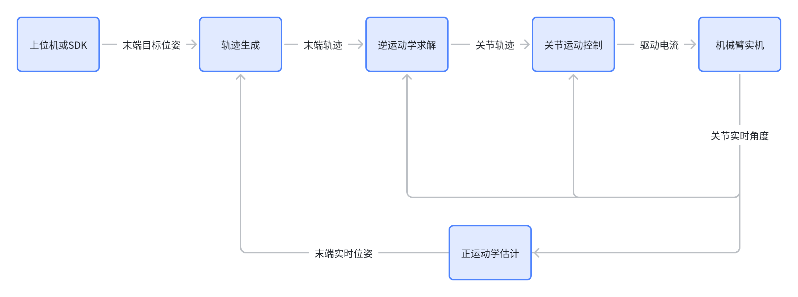
3 开发工具与环境
针对"用什么软硬件开发机械臂程序"的问题，本教程给出推荐的组合。下表"常见工具"列出该领域的常见选项供横向了解，"教程推荐"则是本教程实际采用和推荐的选型或方案：
| 类别 | 直观解释 | 功能作用 | 常见工具 | 教程推荐 |
|---|---|---|---|---|
| 计算设备 | 运行程序、跑算法的硬件载体 | 承担机械臂的运动学解算、规划控制与可视化等功能 | 笔记本、台式机、Jetson、RDK、树莓派 | 笔记本电脑（部署阶段可选 Jetson / RDK） |
| 操作系统 | 管理硬件、调度程序的底层基础 | 提供文件、进程、驱动与开发工具运行环境 | Ubuntu、Windows、macOS | Ubuntu 2204 LTS（Linux 发行版） |
| 编程语言 | 人与机械臂"对话"的语言 | 编写运动学、控制、通信与可视化代码 | Python、C++、MATLAB | Python（科学计算与原型验证）+ C++（性能敏感模块） |
| 环境管理 | 隔离不同项目依赖的工具 | 防止库版本冲突，让代码可复现、易迁移 | conda、pip、venv、Docker | conda / mamba（Python 虚拟环境） |
| 编辑器 | 写代码、调试、看运行的"工作台" | 提供文件阅读编辑、语法高亮、自动补全、断点调试与终端等 | VS Code、PyCharm、CLion、Jupyter | VS Code（GitHub生态 + 丰富的插件） |
| AI 编程辅助 | 帮你写、读、改代码的智能码农助手 | 加速学习与排错，尤其适合初学者理解陌生 API | Cursor、Copilot、ChatGPT、Claude、ZCode、Kimi Code | 按需选择 |
| 其他工具 | 串口调试、版本管理、仿真等辅助软件 | 解决通信联调、代码备份、离线仿真等具体需求 | Git、URDF Studio、Serial Studio、RViz、Gazebo、MATLAB/Simulink | Git（版本管理）、URDF Studio等，按需选择 |
📌 最小化起步组合推荐：一台 JoyArm 机械臂 + 一台装有 Ubuntu 2204 LTS 系统的笔记本电脑 + VS Code + conda 管理的 Python 环境 + 一个熟悉的 AI Agent 工具。对于其他工具，无需过度了解，学习实践的过程中再逐步丰富工具栈即可。